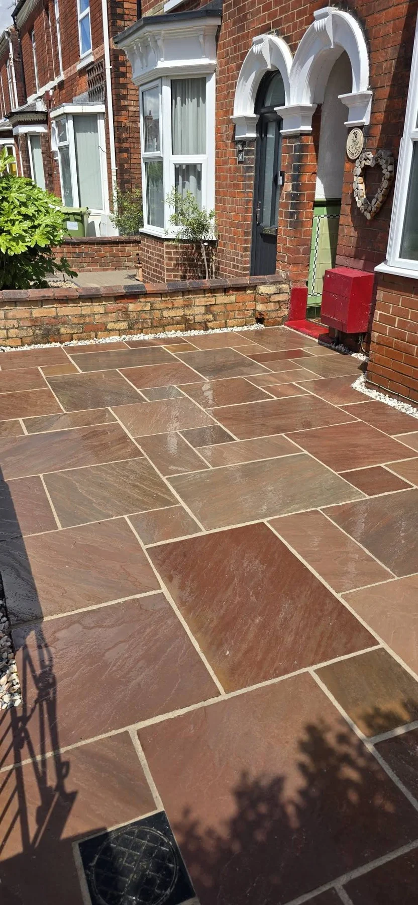
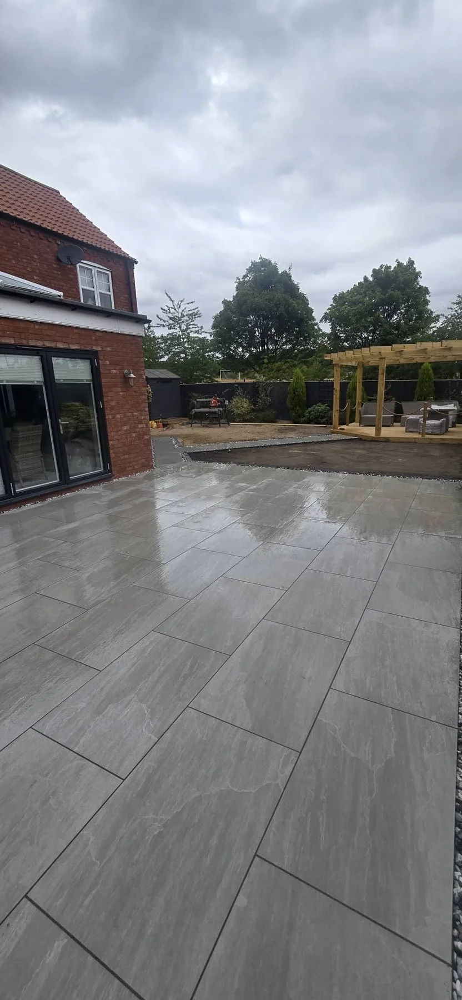

JCM · BUILDING & FENCING CONTRACTOR
Built for the home.
Made for the outdoors.
Garden makeovers, patios, driveways and timber structures. Bring your outside space together with JCM.
BUILDING & FENCING. ONE CLEAR VISION.
Better boundaries.
Better days outside.
A place to sit in the sun. A patio ready for the family. A driveway and entrance that feel part of the home.
JCM’s work brings together paving, timber fencing, gates, decking and garden structures, with the finishing details that make a space feel complete.
Tell us what you have in mind →

FEATURED GARDEN PROJECT
A place to gather.
A space to unwind.
Large-format grey paving connects the house to the lawn, while a timber pergola and deck create a separate seating area. A defined path brings the whole garden together.
Let’s talk about your garden →RECENT WORK
Real projects.
Finished with care.
Explore JCM’s patios, driveways, fencing and garden details. Tap a photograph for the complete view.
THE DETAILS MAKE THE DIFFERENCE
Strong structure.
A thoughtful finish.
Timber structures frame a garden. Steps connect its levels. Gates and fencing define the way in.
From sleeper-edged terraces to a complete entrance, explore the materials and details across JCM’s work.
Explore fencing & gates →SEE THE WORK FOR YOURSELF
Watch us work.
A closer look at JCM’s work, with two project videos straight from the business.
Discuss your own project →
JCM BUILDING & FENCING
Bring the whole
project together.
Whether you have a single job in mind or a wider garden makeover, start with a conversation about the space and what you want from it.
Share your photos, measurements and the changes you would like to make.
Patios, driveways, fencing, gates, decking and garden makeovers.
Ask JCM about brickwork, joinery and plastering as part of your plans.
PLANNING YOUR PROJECT
A few useful details.
What work can I ask JCM about?
Garden makeovers, patios, driveways, fencing, gates, decking, joinery, brickwork and plastering. Choose the closest service in the quote form and describe what you need.
What should I send for a quote?
Your area or postcode, a description of the work, approximate measurements and photographs of the space. Mention access restrictions and changes in level.
Can I see the full project photographs?
Yes. Tap a gallery image to view the complete photograph, then use the close button or Escape to return.
How does the WhatsApp form work?
The form prepares a message with your chosen service and project details. WhatsApp opens so you can review it, add photographs and send it directly to JCM.
LET’S MAKE A START
Your next project
starts here.
Tell us what you would like to create, where the property is and any access details. You can send project photographs through WhatsApp.
JCM BUILDING & FENCING CONTRACTOR
Have a project in mind?
Talk to JCM about your next home or garden improvement.
jcmbuilding@mail.com